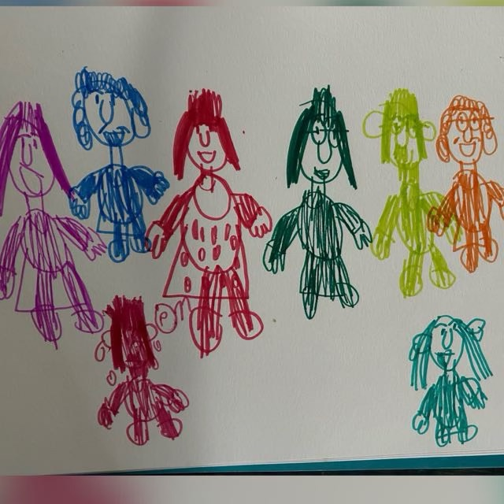

O Grupo
Desde o segundo semestre de 2019, dois dias por semana, três horas de duração, às quartas e sextas-feiras.
O grupo funciona, desde o segundo semestre de 2019, em dois dias semanais com três horas de duração, nas quartas e sextas-feiras. Cada dia da semana conta com uma sequência de oficinas diferentes e que conversam entre si no que promovem de abertura expressiva para o aprofundamento e desdobramento de aspectos subjetivos de cada participante.
Entre 2013 e 2019, a equipe realizou um trabalho grupal com crianças e pré-adolescentes, através dos pilares da inclusão, saída em grupo pela cidade e encontro entre pares. Isso nos levou até a invenção deste novo espaço de trabalho, agora com tempo de encontro ampliado, sequência entre as atividades em um espaço fixo desenvolvido especialmente para a realização das oficinas.

Isso só é possível de ser realizado a partir da presença do psicanalista que, com sua escuta e intervenções, permite e promove que o sujeito se expresse e se experimente de forma mais expandida, no sentido de aproveitar ao máximo o que cada um dos instrumentos artísticos têm a oferecer para o trabalho de subjetivação e avanços terapêuticos direcionados às dificuldades e demandas de cada um.
Ainda que a circulação na cidade e as saídas possam fazer parte de forma secundária desse espaço quando se fizerem complementares às direções de tratamento em cada caso, o trabalho pelas oficinas visa que o grupo seja um espaço de referência para um público-alvo que enfrenta importantes desafios no laço com os outros, com o próprio corpo e com a linguagem. Nesse sentido, é importante que haja constância, continuidade, sequência e tempo juntos em um processo coletivo de acesso às particularidades do mundo subjetivo de cada um, de modo a ser expresso para o mundo externo em um lugar que promova troca e avanço.
Por que em grupo?
Sabemos que a psicanálise surgiu do encontro entre dois, o analista e o analisante. Tradicionalmente, ela é uma experiência orientada pela fala do analisante e a escuta do analista. A associação livre é seu método, pede-se que fale livremente, tudo aquilo que vier. É um espaço/tempo de sigilo, no qual outros não ouvirão aquilo que foi dito, no qual os atos falhos, sonhos, lapsos emergem.
Mas e quando os pacientes falam muito pouco ou não falam? E quando alguns não circulam facilmente nesse laço social tão importante para sua própria constituição e avanços subjetivos? Nesses casos o grupo se torna um instrumento de tratamento importante.
Não nos constituímos sozinhos, mas a partir do outro e com o outro. Estar no laço social é, portanto, uma construção.
Em casos que percebemos a dificuldade de estar e trocar com os outros, o dispositivo grupal se faz uma intervenção em ato. É a partir dele que surgem os impasses de se fazer escutar e de escutar os outros, de esperar o tempo de outra pessoa e de articular o desejo de um com o outro em uma proposta em comum. Muitas vezes, a fantasia de um toca a fantasia de outro, que permite que ela também apareça, como em outras vezes o limite de um serve como barreira para o outro.
Vemos então dois movimentos: o tratamento pelo coletivo sustenta a particularização de cada um, assim como faz a ponte para que, a partir do seu mundo particular, o sujeito possa sustentar uma presença em grupo.
Para entender um pouco mais de cada oficina e o que elas têm a oferecer para um tratamento em saúde mental a partir da clínica psicanalítica, entre no link oficinas.